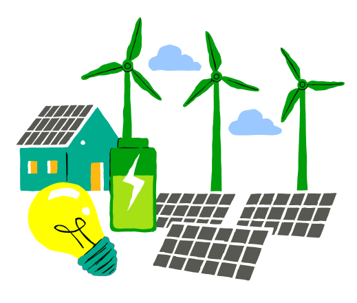
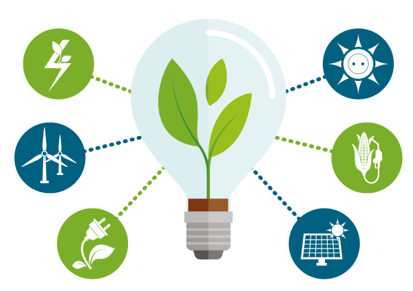

O cenário de anergias começou a mudar a partir da revolução industrial com o surgimento da máquina a vapor. Utilizar o fogo para gerar movimento, possibilitou o desenvolvimento de fábricas, indústrias, maquinários robustos e até mesmo transportes. Todo esse desenvolvimento se dá na exploração de recursos naturais (carvão mineral, petróleo e gás natural). Somente após mais de 100 anos a energia elétrica foi descoberta.
Os derivados do petróleo tornaram-se a principal fonte de energia elétrica, além dos combustíveis para transporte e indústria. As fontes de energia fósseis ainda apresentam a maior fonte de energia mundial. Mas com a crise do petróleo e a crise ambiental global as fontes de energias alternativas começaram a ter atenção e foco. Então com isto as energias renováveis passaram a ter força para investimento em inovação, tecnologia e expansão. Além de que as energias renováveis trazem confiança a sociedade pois ela tem rumo a sustentabilidade, benefícios socioeconômicos e também ambientais.
No ano de 1944 os seis pioneiros aerogeradores começaram a produzir energia, criando um perfil nunca visto antes na serra de El Perdón (Espanha). Naquela época os aerogeradores eram gigantes sendo os maiores do mundo com 500 KW de potência e 40 metros de altura, já hoje em dia se tornaram minúsculos, pois os atuais são três vezes mais altos e dez vezes mais potentes. Mas foram os primeiros pioneiros, alguns visionários começaram a imaginar que o futuro de energia da humanidade estava no clima (vento, sol, água) e em outras energias renováveis.
A energia renovável é a energia obtida pelos recursos renováveis, sendo eles os recursos que não se esgotam. Como o sol, a água, o vento ações que são da própria natureza que não depende da interferência humana para existir. Tendo um ciclo contínuo e próprio se renovando constantemente.
Algumas energias renováveis são: Hídricas (água), Solar (sol), Eólica (vento) entre outras. Porém apesar de serem renováveis estas fontes dependem do clima, e com isso podem levar um tempo para se renovar de fato, como no período de seca.
As energias renováveis são inesgotáveis e com isto causam menores impactos ambientais, por elas serem energias que são produzidas pela luz solar, vento, calor geotérmico e os movimentos das ondas. Os únicos impactos ambientais são as alterações de paisagem e desmatamento de pequenas áreas para a instalação de turbinas e painéis.
A energia hídrica é a de maior impacto ambiental, pois ela é gerada pela força da água, para isto é preciso construir barragens no leito dos rios, que retém a água, desabriga animais silvestres e inundam florestas.
A energia solar precisa, normalmente de painéis solares nos telhados das edificações para gerar energia. Com isso as centrais fotovoltaicas são maiores causando impacto ambiental porque tomam áreas extensas, além de usarem água para redução de temperatura de componentes com superaquecimento.
A energia eólica apresenta são a poluição sonora, poluição visual que afeta principalmente os parques eólicos e fora que atrapalha o comportamento das aves nas mudanças das estações.
Com os avanços tecnológicos é inquestionável que tenhamos fontes de energia renováveis, por mais que os meios atuais apresentem pontos fracos a serem melhorados como por exemplo a energia eólica onde as hélices interferem nos comportamentos das aves, os cientistas vêm procurando outras formas ainda mais eficazes de se gerar energia.